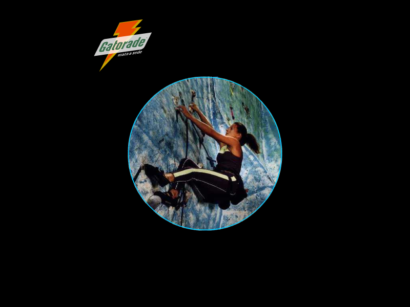
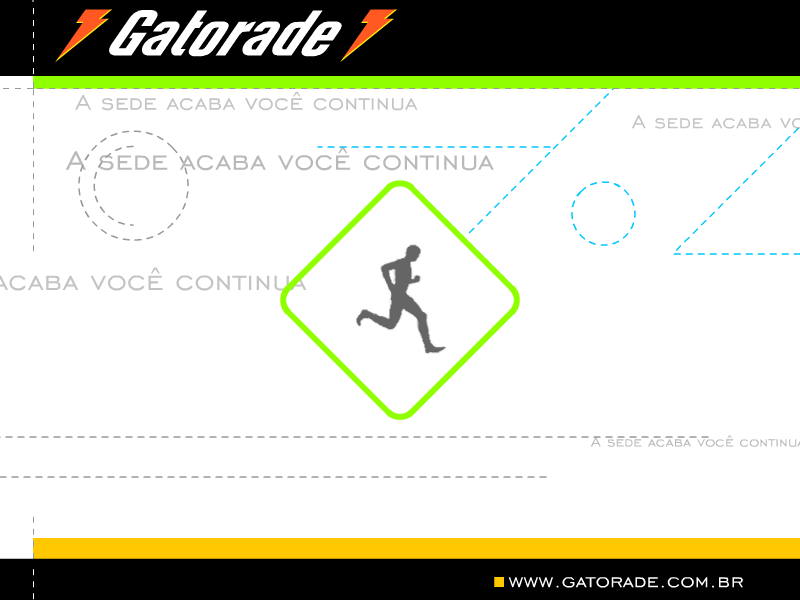
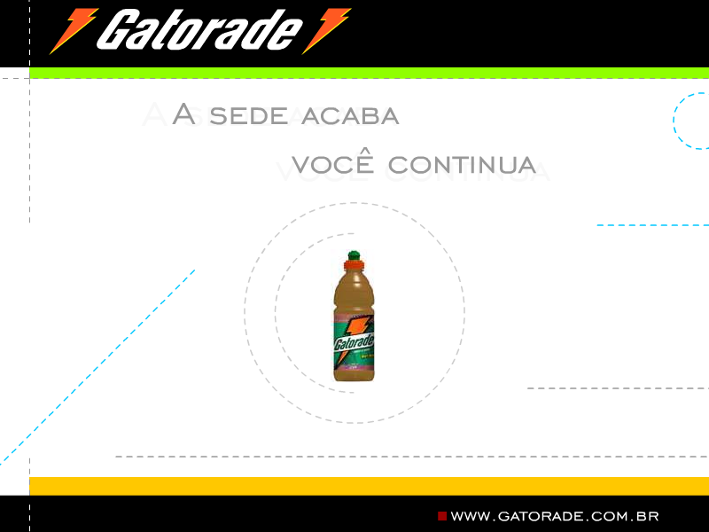
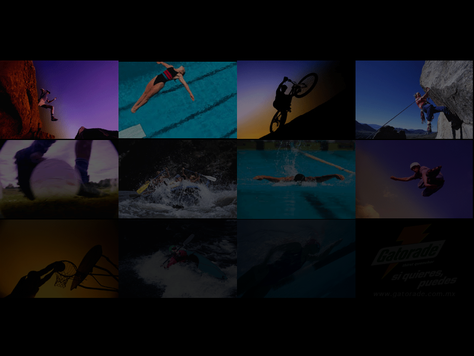
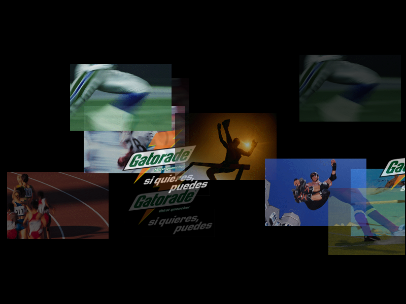

Gatorade Screensavers

gatorade.com.br
Pra Vencer

DOWNLOAD
 .scr file (648 KB)
.scr file (648 KB)
#2

DOWNLOAD
.scr file (345 KB)
#3

DOWNLOAD
.scr file (348 KB)
gatorade.com.mx
Mosaic

Note: This is a 16-bit program and requires special programs to run on 64-bit Windows, such as otvdm
DOWNLOAD
.exe file zipped (305 KB)
Photos

Note: This is a 16-bit program and requires special programs to run on 64-bit Windows, such as otvdm
DOWNLOAD
.exe file zipped (1.93 MB)